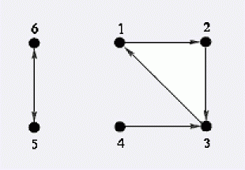

第一行只有一个整数, n – 特工的总数, 2 <= n <= 1000000. 特工从1 到 n编号. 接下来n行每行一个整数ak 表示特工k将要监视特工ak , 1 <= k <= n, 1 <= ak <= n, ak <> k.
Byteotian 中央情报局 (BIA) 雇佣了许多特工. 他们每个人的工作就是监视另一名特工. Byteasar 国王需要进行一次秘密行动,所以他要挑选尽量多的信得过的特工. 但是这项任务是如此的机密以至于所有参加行动的特工都必须至少被另一名没有参加任务的特工所监视( 就是说如果某个特工参加了行动,那么原先监视他的那些特工中至少要有一个没有参加进行动). 给出监视任务的详情,要求计算最多能有多少个特工参与其中.
第一行只有一个整数, n – 特工的总数, 2 <= n <= 1000000. 特工从1 到 n编号. 接下来n行每行一个整数ak 表示特工k将要监视特工ak , 1 <= k <= n, 1 <= ak <= n, ak <> k.
打印一个数,最多能有多少特工参加入这个任务.
6
2
3
1
3
6
5
3
